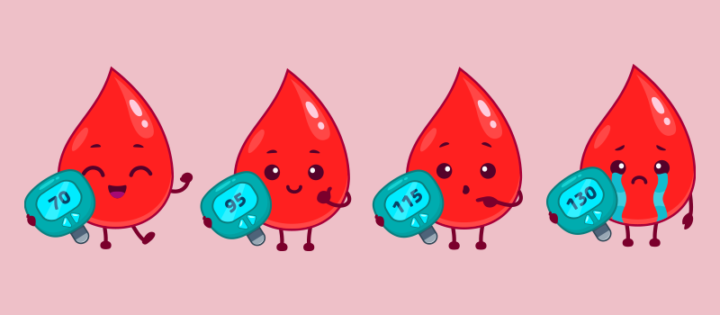

Are you hungry? What are you craving? Is it a bowl of pasta? A sandwich? Salad? After sitting down for a meal, what happens next inside your body? Scroll down to explore how different meals affect glucose levels in real-time!
According to the CDC, 1 in 10 in America have diabetes. This means that in any given group of 10, at least one person is affected. Understanding glucose levels is crucial for maintaining long-term health.
We conducted an exploratory data analysis (EDA) to clean and structure the CGMacros dataset, which contains continuous glucose monitoring (CGM) readings, meal compositions, and participant health metrics.
Each point on the graph represents a meal. The y-axis shows glucose levels measured in mg/dL, while the x-axis represents time. Hover over meal points to see detailed nutritional information.
The lines connecting meal points show how glucose levels change over time. Notice how different meal compositions can lead to varying glucose responses.
In this section, you can explore how your diet may impact your overall health, specifically whether you might be at risk for diabetes. The data visualization shows clusters based on real-world data of macro-nutrient consumption and glucose responses, helping us categorize different dietary patterns.
By entering your own macro-nutrient consumption (carbs, protein, fat, and fiber), we’ll predict which category you are likely to fall into: Healthy, Pre-diabetic, or Diabetic. This prediction is based on where your diet places you within the clusters.
Try entering your current diet details below and see what your predicted health status might be based on your macro-nutrient intake!
Glucose Spike explanation
Each point on the graph represents a meal. The y-axis shows glucose levels measured in mg/dL, while the x-axis represents time. Hover over meal points to see detailed nutritional information.